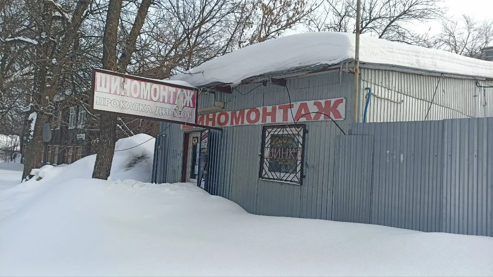
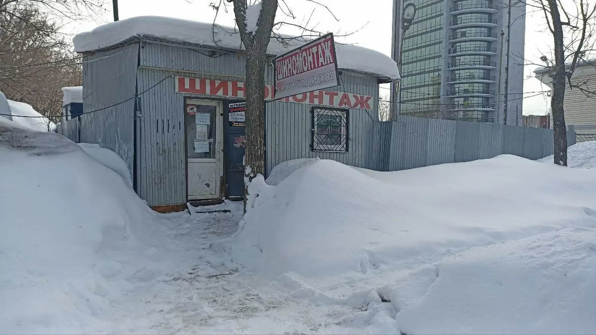

Шиномонтаж · Ижевск
Шиномонтаж в Ижевске на Советской, 50Б: переобуем и починим шину
Переобувка, мелкий ремонт шин, подкачка колёс. Работаем каждый день.
- Работаем каждый день
- Переобувка и мелкий ремонт шин
- Ответим на вопросы по вашему авто

Услуги и цены
Цену на переобувку называем по радиусу колёс.
Услуги
- Переобувка (шиномонтаж)уточнить
- Ремонт шинымелкий ремонтуточнить
- Подкачка колёсуточнить
Как проходит
- 01
Записываетесь на время
Позвоните или напишите во ВКонтакте.
- 02
Приезжаете по адресу
Советская ул., 50Б.
- 03
Переобуваем или ремонтируем шину
Мастер отвечает на вопросы по вашему авто.
- 04
Забираете машину

Что отмечают клиенты в отзывах
Приветливые сотрудники
Клиентка пишет, что отвечают даже на самые простые вопросы об авто.
Оптимальное соотношение цены и качества
Об этом пишут в отзывах.
Быстро и качественно
Так оценивают работу постоянные клиенты.
Отзывы с Яндекс.Карт
«Хороший шиномонтаж, сотрудники всегда приветливые и отвечают даже на самые глупые женские вопросы об авто 🙈 Постоянно переобуваю здесь машину, также делала мелкий ремонт шин, все супер, по цене и качеству отличное соотношение 👍»
Екатерина · 29 января
«Цена качество оптимально. Подход к работе понравился»
Павел Дорофеев · 14 декабря 2024
«Всё быстро и качественно, рекомендую 👍»
Михаил Морилов · 31 марта
Отзывы с карточки на Яндекс.Картах, без правок.
Частые вопросы
Когда работаете?
Пн–пт с 10:00 до 20:00, сб и вс с 10:00 до 18:00.
Где вас найти?
Советская улица, 50Б, Ижевск.
Как записаться?
Позвоните или напишите во ВКонтакте, ссылка в блоке контактов.
Запишитесь на удобное время
- Адрес
- Советская ул., 50Б, Ижевск
- Часы
- Пн–пт 10:00–20:00, сб–вс 10:00–18:00
- Телефон
- +7 (912) 015-15-45